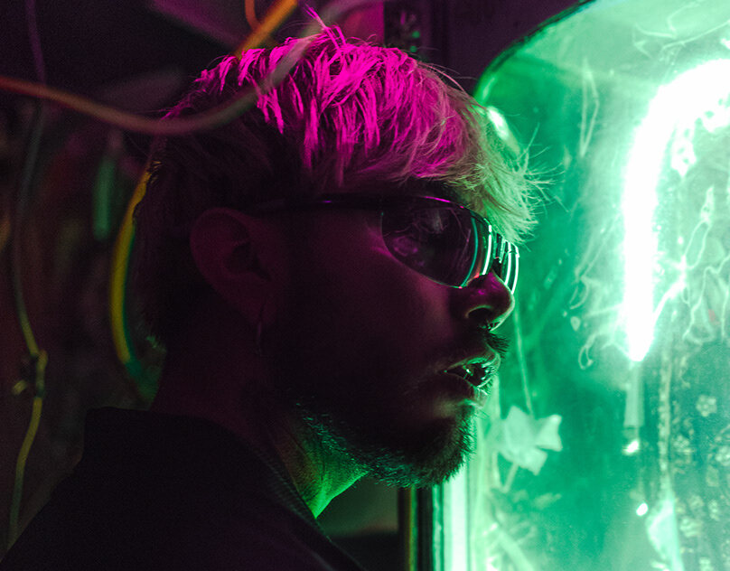
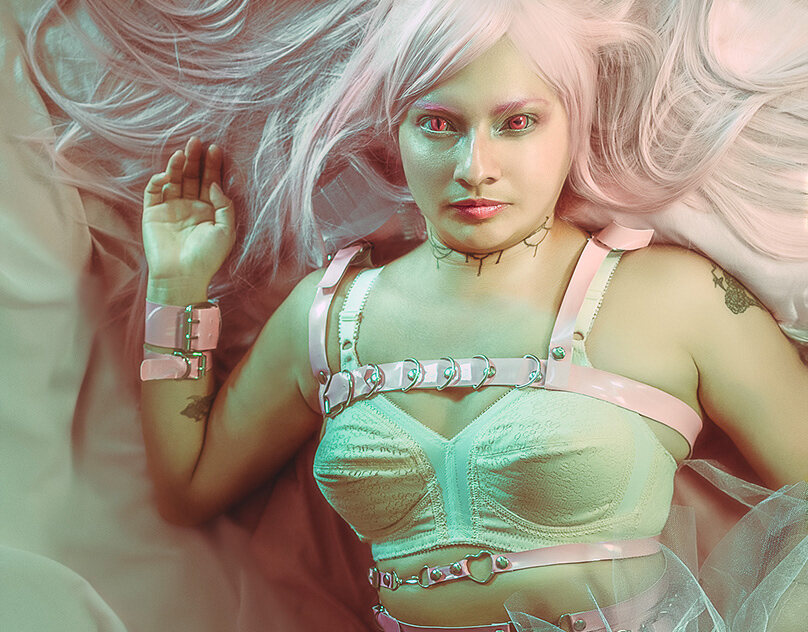
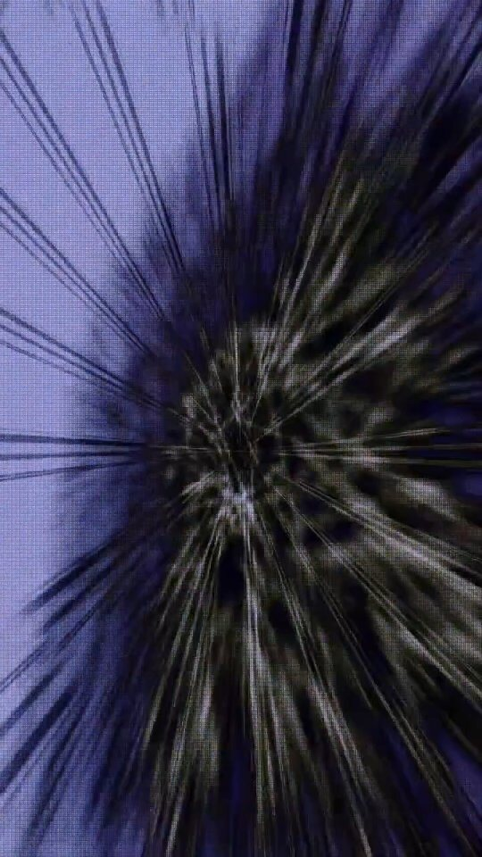

memoria
líquida
An archive of pieces about water, memory, and the things that refuse to hold their shape. Scroll — and watch the surface remember.
Everything here was once submerged. The images began as photographs taken under shallow water, then re-exposed, bled, and let to dry into the paper. The droplets resting on this page are not reading the page alone — each one mirrors a whole room you cannot see, a world that drifts past as you move down the work.
Look at a single drop and hold still. Now scroll a little. The faint thing caught on its skin is turning over — a colour you didn't notice has slid up from the bottom edge, the last one slipping off the top. Nothing flickers, nothing swaps; it is only the reflected world, moving past the bead the way a street moves past a window of rain.
The series travels between pink-green chemistry and deep ink blue, the palette of a darkroom flooded by accident. Read slowly. The drops are keeping their own slow record of everything that passes them.
A reflection is never the thing itself — it is the thing, plus the curve of whatever holds it, plus the moment. Water keeps the worst record and the most honest one: it shows you what is there, bent, and lets it go the instant the source moves on. These drops do the same. They are not windows into the work; they are the work watching the world go by.
Scroll on. Somewhere on the second plate a green is rising into a bead that, a moment ago, held only blue. You will not catch the change happen. You will only notice, later, that it has.





